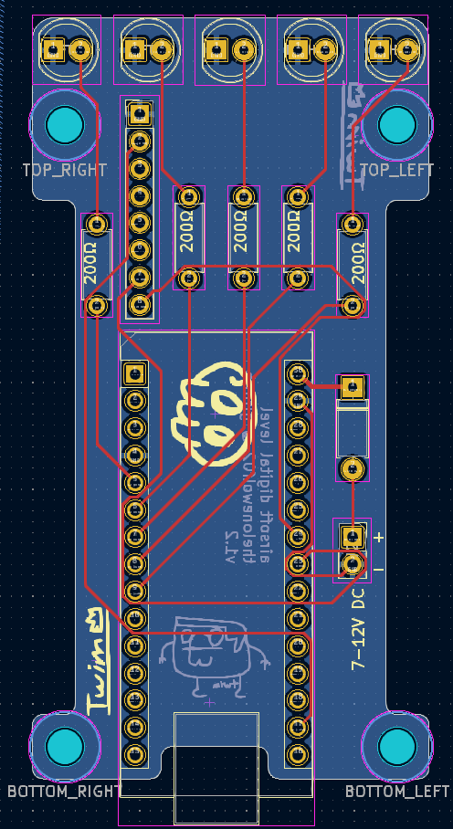
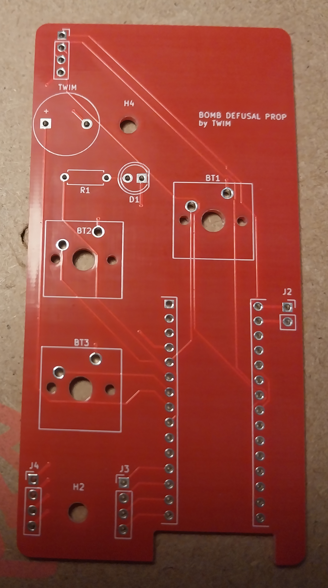

Legacy Projects
This page documents some of my earliest embedded systems and PCB fabrication projects. They serve as great learning milestones showing how my engineering process and design principles have evolved.
Tilt Indicator (Early Prototype)
Skills: PCB Design, CAD, Embedded Systems, Rapid Prototyping
A relative involved in competitive target shooting mentioned that commercial electronic levels cost well into the hundreds of euros. I challenged myself to build a low-cost, accurate Arduino-based digital level.
This early prototype used an Arduino Nano and an MPU-6050 6-axis IMU (3-axis accelerometer + 3-axis gyroscope). Measurement sensitivity and zero-calibration offset are configurable in firmware. While the initial breadboard prototype used an OLED screen, shooter feedback indicated that an LED array in their peripheral vision was far easier to acquire while maintaining target focus.
This version used five LEDs to indicate the direction and magnitude of rifle cant. The PCB was designed in KiCad and fabricated by JLCPCB, with custom 3D-printed mounts for Picatinny rails.
More details are available on the GitHub repository.



Airsoft Interactive Defusing Prop
Skills: Arduino, Interactive Hardware, Game Props
For weekend airsoft scenario games, field marshals often allow players to bring interactive props to make objectives more engaging. Rather than relying on simple toggle switches, I set out to engineer a multi-stage interactive "defuse the bomb" game prop.
This was my very first custom PCB design after breadboard prototyping. Players must determine and cut/disconnect the correct sequence of wires before a countdown timer expires.
Building this early prop taught me vital lessons in electrical protection: field abuse exposed the lack of reverse-polarity protection and input isolation, which caused board failures. Addressing these mistakes directly influenced all my subsequent hardware designs, instilling rigorous ESD, reverse-voltage, and over-current protection practices.
More details on the GitHub repository.
